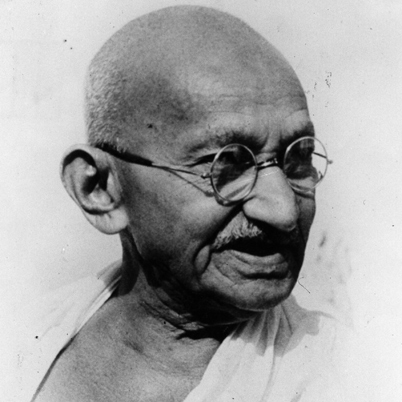

Born on October 2, 1869, in Porbandar, India, Mohandas Gandhi studied law and came to aggravate for Indian rights both at home and in South Africa. He became a leader of India's independence movement, organizing boycotts against British institutions in peaceful forms of civil disobedience. He was given the holy name Mahatmas and oversaw a diverse ashram. He was killed by a fanatic in 1948.
Indian nationalist leader Mohandas Karamchand Gandhi was born on October 2, 1869, in Porbandar, Kathiawar, West India. He studied law in London, but in 1893 went to South Africa, where he spent 20 years opposing discriminatory legislation against Indians. As a pioneer of Satyagraha, or resistance through mass non-violent civil disobedience, he became one of the major political and spiritual leaders of his time. Satyagraha remains one of the most potent philosophies in freedom struggles throughout the world today.
In 1914, Gandhi returned to India, where he supported the Home Rule movement, and became leader of the Indian National Congress, advocating a policy of non-violent non-co-operation to achieve independence. His goal was to help poor farmers and laborers protest oppressive taxation and discrimination. He struggled to alleviate poverty, liberate women and put an end to caste discrimination, with the ultimate objective being self-rule for India. Following his civil disobedience campaign (1919-'22), he was jailed for conspiracy (192-'24). In 1930, he led a landmark 320 km/200 mi march to the sea to collect salt in symbolic defiance of the government monopoly. On his release from prison (1931), he attended the London Round Table Conference on Indian constitutional reform. In 1946, he negotiated with the Cabinet Mission which recommended the new constitutional structure. After independence (1947), he tried to stop the Hindu-Muslim conflict in Bengal, a policy which led to his assassination in Delhi by Nathuram Godse, a Hindu fanatic.
Go to top